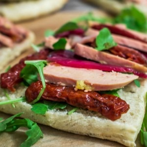
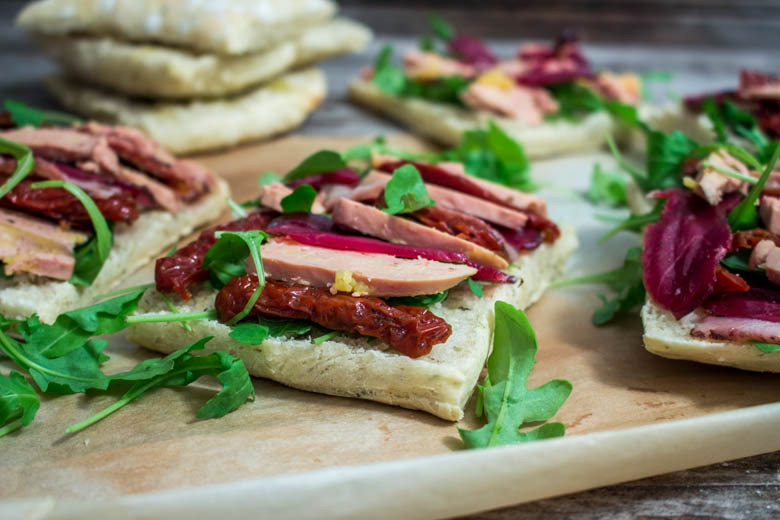

Délicieuses bruschettas au foie gras

Aujourd’hui on se retrouve pour une délicieuse recette de bruschetta foie gras magret et tomates séchées! Je ne sais pas comment a été la météo par chez vous ces derniers temps mais ici on varie entre grisaille et grand soleil! J’ai donc profité d’un jour de soleil il y a quelque temps de ça pour faire une petite surprise à mon chéri en l’emmenant voir le coucher de soleil sur la Dune du Pyla (c’était sans compter qu’il ruine la surprise et que finalement il soit au courant de tout ce que j’avais préparé!!) Pour ceux qui ne connaissent pas la dune du Pyla il s’agit de la plus grande dune naturelle de sable d’Europe située à l’entrée du bassin d’Arcachon.
J’ai donc préparé un petit pique nique pour que nous puissions passer un bon moment en amoureux en lui préparant de délicieuses tartines au foie gras.
Après s’être trouvés une petite place en haut de la dune nous avons pu admirer ce magnifique coucher de soleil en dégustant ces délicieuses bruschettas au foie gras et en buvant un bon verre de vin.
Encore une fois cette recette n’est pas bien compliquée et est à la portée de tout le monde, j’espère juste vous donner quelques idées car c’est souvent ça qui fait défaut à tout le monde avoir l’idée de « qu’est ce qu’on mange aujourd’hui ».
Mes bruschettas au foie gras sont également au magret de canard, aux tomates séchées et à la roquette (que des bonnes choses!) le tout déposé sur du pain ciabatta maison (recette ici).
Vous pouvez utiliser cette idée de recette pour faire ces bruschettas version mini sur des petits toasts en apéritifs à l’occasion des fêtes de fin d’années! Elle auront un grand succès 😉
J’espère que cette recette vous plaira autant qu’elle nous a plu à nous! Bonne lecture 🙂
Ingrédients
- Pains ciabatta - 2
- Foie gras
- Tranches de magret de canard séché - 90g
- Tomates séchées - 1 bocal
- Roquette
Instructions
- Couper les pains ciabatta en deux
- Badigeonner chaque face d'un peu de graisse de foie gras
- Faire toaster les pains
- Déposer quelques feuilles de roquette sur chaque face du pain ciabatta
- Alterner ensuite tomates séchées, tranche de foie gras et tranche de magret jusqu’à remplir la tartine
- Donner quelques tour de moulin à poivre noir
- C'est maintenant le moment de déguster!

Les tips de la communauté
Bruschettas très appréciées pour leur présentation élégante et leurs saveurs raffinées. Lecteurs trouvent la recette sophistiquée et belle à photographier. Compliments sur l'esthétique globale.
Astuces
- L'association du foie gras avec le pain grillé croustillant est réussie